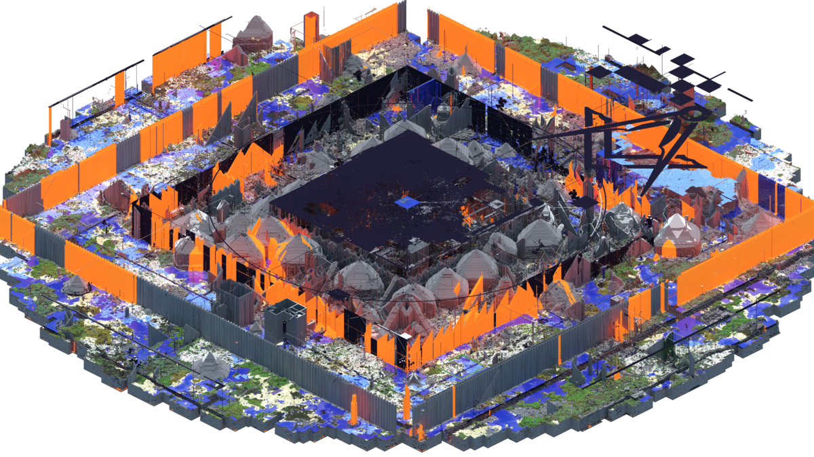
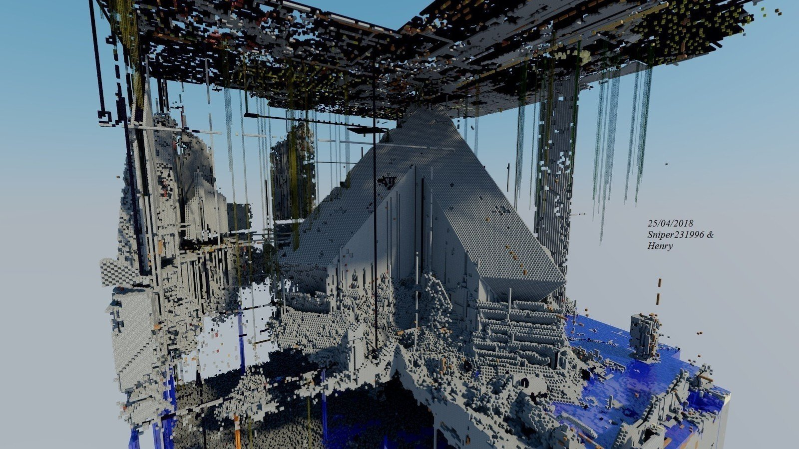
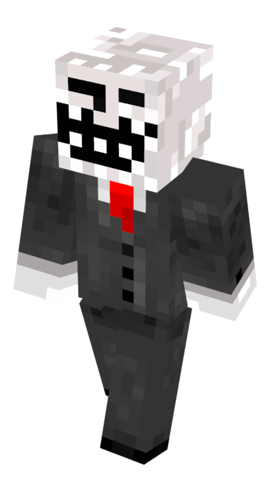
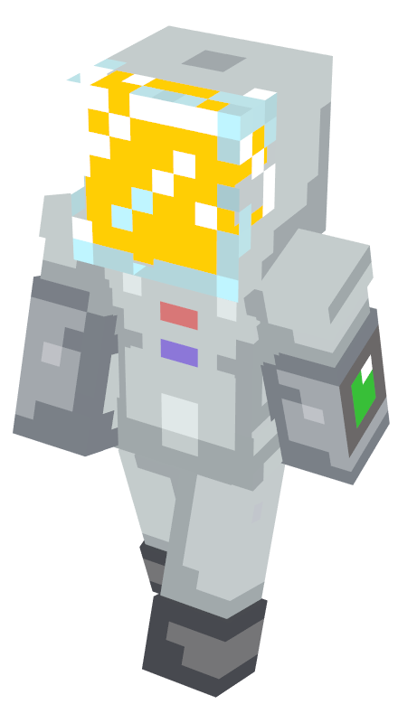

ознакомление с сервером
2b2t, или 2builders2tools — многопользовательский сервер Minecraft, созданный в декабре 2010 года. 2b2t — один из старейших работающих серверов, а также самый старый анархический сервер в Minecraft. Мир 2b2t также является самой старой серверной картой в игре, которая не была сброшена с момента её создания. Поскольку сервер является анархическим, он практически не имеет правил, поэтому везде на сервере встречаются гриферство и читерство. Сообщалось, что в октябре 2015 года сервер занимал более 800 гигабайт на диске и стоил 90 долларов в месяц за содержание. По данным владельца сервера, по состоянию на апрель 2020 года — этот показатель увеличился до 7468 гигабайт с более 456 213 уникальных игроков.
это его спавн.
хронология сервера

самые извесные игроки сервера
админ сервера Hausemaster - является одним из соучредителей и совладельцев 2b2t с декабря 2010 года вместе с Джорджем бушем420, хотя он, безусловно, самый активный и известный из них двоих, вероятно, имеющий доступ к аккаунту Джорджа буш420. Hausemaster был тем, кто изначально придумал идею создания 2b2t, что технически сделало их старейшими олдфагами. Поскольку сервер не имеет правил, Hause не нуждается в найме персонала для какой-либо модерации и заботится только о поддержании работоспособности сервера.
Jared2013 присоединился к серверу в феврале 2013 года. Он был активен на другом сервере anarchy, но когда он закрылся, его друг Dr_Cash заставил его присоединиться к 2b2t. Dr_Cash предоставил Джареду доступ к аккаунту Jared2013, который, по всей видимости, был случайным аккаунтом, к которому он получил доступ. Джаред зарекомендовал бы себя, используя разные "образы", участвуя в создании, скорби, делая каверы на известные песни[1] и даже занимаясь вокалом. В основном он использовал аккаунт Jared2013 для скорби, пока он постепенно не стал его "основным". Джаред ценил 2b2t за его относительно небольшое сплоченное сообщество, "чистоту" и свободу. в 2013 году Джаред был одним из игроков, убитых во время Второго вторжения в августе 2013 года. В период с апреля по май 2015 года Джаред участвовал в Третьем вторжении, как сторонник, так и противник.

popbob был печально известным олдфагом и грифером, который присоединился в начале 2011 года из 4chan и сейчас неактивен. Она значительно известна среди современных 2b2t и других серверов благодаря тому, что ее популяризирует и освещает во многих видео YouTuber FitMC. На сегодняшний день она используется в различных постах и мемах, связанных с 2b2t. popbob печально известна тем, что якобы опозорила больше баз, чем любой другой известный игрок на сервере, хотя это достижение уже давно оспаривается jared2013.м chris_leighton. Эту страницу не следует путать с другим олдфагом-троллем по имени Крислейтон.
xcc2, также известный как BigNick0, является олдфагом на 2b2t и играет с 2011 года. xcc2 хвалят за то, что он является одним из самых креативных разработчиков на сервере, за историческую информацию, которую он сохранял на протяжении многих лет, и за его надежность. Он также был частью многих старых и новых групп и баз, наиболее заметной из которых является база возрождения NFE.
 сервервторая страница